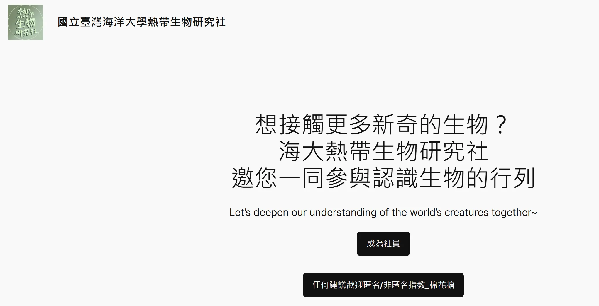
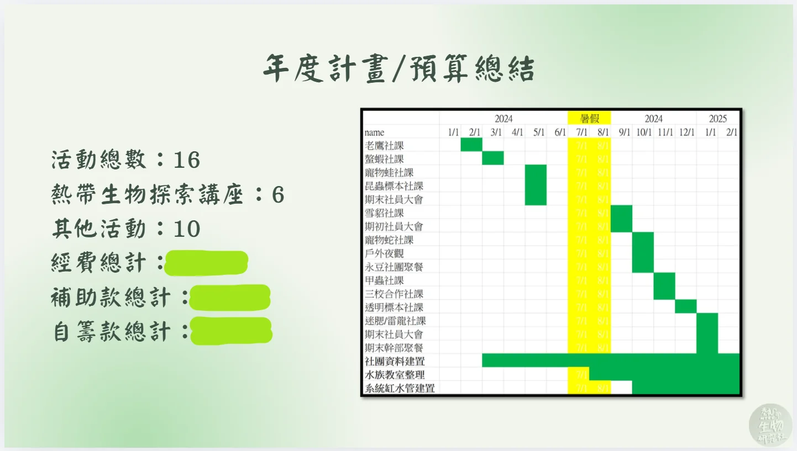
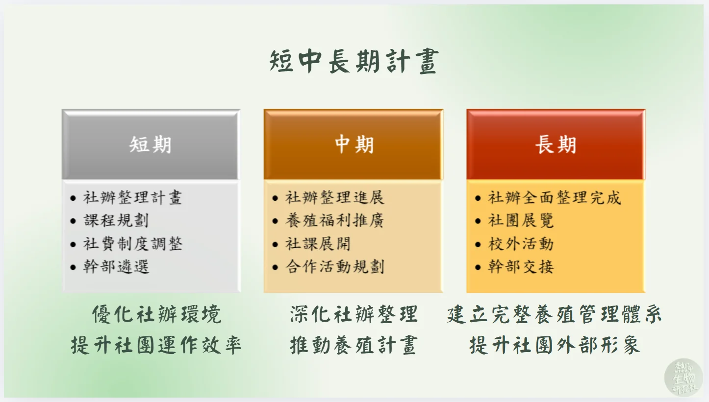

這是一篇關於「用什麼思維框架經營一個小型組織」的整理。大學社團每年換一次屆，最常見的結局是上一屆的帳號、檔案、流程跟著人一起畢業，下一屆從頭摸索。任內想處理的就是這件事：把熱研社當成一個有對外品牌、對內 SOP、可量化績效的輕量級組織來經營，讓它交接得下去。本文整理了五個專案管理的角度，並探討如何應用在社團經營中。

# 五個專案管理角度
| 角度 | 在社團場景如何落地 |
|---|---|
| 對外品牌 | IG / Wordpress 官網 / portaly.cc 連結樹三層，IG bio 統一入口 |
| 對內 SOP | Notion 任務分配、Google Drive 分權限、社團棉花糖匿名問答 |
| 流程系統化 | Simplymeet 線上預約取代手動約時間 |
| 跨組協作 | 三校聯合線上社課（海大主辦 + 宜蘭大學蘭地爬寵社 + 嘉義大學兩棲爬蟲研究社） |
| 可量化績效 | 用 IG 後台數據（觸及 / 互動 / 粉絲）追蹤策略效果 |
這五個角度共用同一個動作：將原本依賴個人記憶與默契運作的事務，轉化為具體可視化的形式。對外品牌統一到一個入口，新生不用問學長姐 IG 在哪；對內 SOP 落在 Notion 和 Drive，誰接哪一塊、權限到哪一層，攤在檯面上；流程系統化把「約時間」這種反覆出現的瑣事交給工具，省下來的力氣花回內容本身。38 人的社團規模不大，每年換屆時，是否有完整記錄這些介面，將直接影響下一屆能否延續運作，或需重新建立。
# 把工時估出來，時間好安排
專案管理的核心之一是「把建置成本估出來」。七個平台的建置工時逐項列清楚，具體的工時表格在專案篇。這裡講的是觀念：排進行事曆時用具體數字取代「應該不會太久」的憑感覺估算。

# 把社群數據當 KPI 追蹤策略效果
過去社團經營常靠主觀判斷：「我覺得這篇貼文比較好」。導入 IG Insights 後，改用觸及、非粉絲互動、點擊率三個指標，每月看一次、微調一次。數據的真正價值在於它能修正直覺偏差——原以為會受歡迎的貼文可能觸及率平平，隨手發的那篇互動反而衝高。具體的 IG 成效數字在專案篇。
# 把跨校合作當「外部專案」處理
2024 年 11 月辦了一場三校聯合線上社課：海大主辦，宜蘭大學蘭地爬寵社和嘉義大學兩棲爬蟲研究社參與。把它當「外部專案」處理的關鍵是事前寫企劃書——發表順序、宣傳排程、設備測試時間全部定義好，三個社團看同一份流程表動作。具體的企劃細節在專案篇。
# 為什麼這套思維可遷移
這套框架的核心是「把每件事拆成可量化、可估時、可交接的單位」。在社團用的是 Notion 分任務、IG 看數據、Simplymeet 排流程，工具會因場景而異，拆法相通。後來在影視製作公司排拍攝時程、在政府補助研究整理案源清單時，用的都是同一套：先估工時再排優先順序、把流程寫成文件讓下一個人接得住、用數據修正直覺。各段經歷的做法細節分別記在對應的專案文章。
